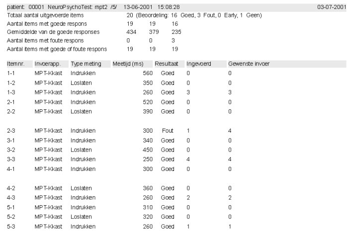

|
Een rapport aanmaken van één of meerdere uitgevoerde testen
INHOUDSOPGAVE
Starten
vanuit de ID-Testorganizer
Starten
vanuit de ID-Testorganizer 
Onderdelen van de module NeuroPsychologische
Testen worden altijd gestart vanuit de ID-Testorganizer.
Bij dit onderdeel worden overigens
geen zichtbare programmadelen van de NeuroPsychologische Testen gestart.
ID-Testorganizer verzamelt automatisch
de benodigde informatie uit resultaatbestanden.
Starten vanuit de ID-Testorganizer
gaat als volgt:
Kies eerst een patiëntnaam.
Klik op de knop Print (naast het
vak met de reeds uitgevoerde en nog geplande testen).
Vanuit het vak Beschikbare Lijsten
kunnen resultaat-bestanden verplaatst worden naar het vak Geselecteerde
Lijsten.
Bij de keuze-vakken naast de Start-knop
kan worden ingesteld hoe uitgebreid het rapport moet worden aangemaakt.
Bij NeuroPsychologische Testen zorgt
de keuze Samenvatting voor een beknopt rapport zonder de uitgebreide
resultaten van elk item.
Alle andere keuzes (vanaf Antwoorden)
geven een rapport met detail-informatie van elk sub-item.
Met standaard in ID-Testorganizer aanwezige functies wordt een rapport aangemaakt van één of meerdere uitgevoerde testen van één patiënt.
Samengevatte
gegevens
Van elke geselecteerde test worden
de samengevatte gegevens in het rapport vermeld. Hierin staan de volgende
gegevens:
Totaal aantal uitgevoerde items
met de aantallen per beoordeling (aantal items Goede respons, Foute respons,
Early respons, Geen respons).
Vervolgens van de eerste 10 sub-items
van de uitgevoerde items:
Aantal malen goede respons.
De bijbehorende gemiddelde responstijd.
Aantal malen foute respons.
Aantal malen goede en foute respons.
Uitgebreide
gegevens
Alleen wanneer bij het starten van
rapportage daarvoor werd gekozen (andere keuze dan Samenvatting),
worden van elk sub-item de uitgebreide resultaten vermeld.
Elk resultaat komt op een aparte
regel, waarop deze gegevens worden vermeld:
Uitgebreide
gegevens bij Fingertapping-meting
De rapportpresentatie wijkt af van
die van andere typen metingen.
Op de eerste regel staat een tekstheader
met algemene info. Dit is gedaan omdat (in afwijking van alle andere typen
metingen) in twee kolommen meetresultaten worden weergegeven. In kolom
"Meettijd (ms)" wordt namelijk de gemiddelde tussen-toets-tijd in millisec
weergegeven en in kolom "Resultaat" de standaard deviatie.
Daarna volgen de meetresultaten
(gemiddelde tussen-toets-tijd en standaard deviatie) van alle subintervallen
en de totale meting.
In kolom itemnr. verwijst het linker
getal naar het itemnummer en het rechtergetal (naast "-") naar het subinterval-nummer.
Bij het totaalresultaat staat hier echter de tekst "Totaal".
Voorbeeld
van een rapport
In onderstaande figuur staat een
fragment van een rapoort.
Hierin staan van de globale resultaten
en de detail-resultaten van een uitgevoerde MPT-test.
